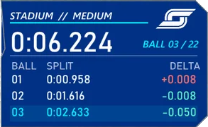

/ THE OVERLAY
A race HUD built for the next personal best.
Live splits, PB deltas, and verified community leaderboards for Splitgate 1 + 2.

ENTERING THE RACE
SPLITSCOMMUNITY-BUILT RACE OVERLAY

RACE THE CLOCK / CHASE THE PERFECT RUN / 2026
EVERY ORB. EVERY SPLIT. EVERY SECOND.
/ THE OVERLAY
Live splits, PB deltas, and verified community leaderboards for Splitgate 1 + 2.
/ YOUR RUN